번역 안내. 클래스·스킬·탤런트 이름 등 고유명사는 인게임 검색을 위해 영어 그대로 두었고, 설명만 한글로 옮겼습니다.
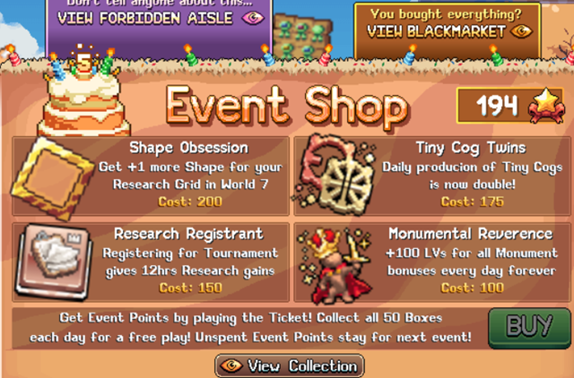
Event Shop 개요
- Event Shop은 매 Idleon 이벤트마다 과거 이벤트의 반복 보너스와 새 보너스를 조합하여 순환합니다.
- 상점 티어는 세 단계가 있으며, 현재 티어의 업그레이드 4개를 모두 구매해야 다음 티어가 잠금 해제됩니다. 티어가 높을수록 비용이 많이 들지만 일반적으로 효과도 더 강합니다.
- 상점 티어는 일반 Event Shop, Black Market, Forbidden Aisle로 구성됩니다. 일부 구매 항목은 이벤트에 따라 다른 티어에 등장하기도 합니다.
- Event Points는 모든 상점 티어의 통화로, 이벤트 미니게임에 참여하여 획득합니다.
- Event Points와 이벤트 플레이 횟수는 이벤트 간에 이월되어, 새로 갱신된 상점이나 특정 이벤트 전용 보상을 위해 모아둘 수 있습니다. 이벤트 플레이 횟수는 젬으로 구매하거나, 매일 몬스터 처치 또는 온라인 접속으로 획득할 수 있습니다.
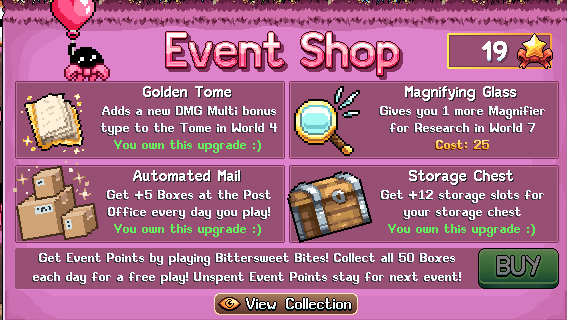
Event Shop 구매 우선순위 (티어 리스트)
이 우선순위 목록을 참고하여 계정 전체 진행 상황에 따라 특정 보너스가 이벤트 포인트를 쓸 가치가 있는지 판단하세요. 무과금 플레이어라면 업그레이드 기준을 더 엄격히 적용하고 장기적인 계정 성장에 집중하세요. 이벤트 포인트가 충분하다면 Black Market이나 Forbidden Aisle을 잠금 해제하기 위해 일반 상점에서 낮은 등급의 보너스를 구매하는 것도 때로는 가치 있습니다.
아래의 모든 일반, Black Market, Forbidden Aisle 구매 항목 및 비용은 마지막으로 Idleon 이벤트에 등장했을 때 기준이며, 이벤트 포인트 비용과 보너스 가용성은 이벤트마다 변동될 수 있습니다.
일반 Event Shop 티어 리스트
| Event Shop 보너스 | 이벤트 포인트 비용 | 등급 | 비고 |
|---|---|---|---|
 Stamp Stack – 매일 무작위 스탬프의 레벨을 +3씩 획득 Stamp Stack – 매일 무작위 스탬프의 레벨을 +3씩 획득 |
20 | S | 운이 따른다면 최대 보유량을 초과하는 최강 스탬프를 더욱 높일 수 있습니다. |
| Bubble Broth – 매일 무작위 연금술 버블의 레벨 +5 획득 | 20 | A | 자원 소모 없이 연금술 진행에 도움이 되며, 특히 레벨 올리기 어려운 버블에 유용합니다. 이 항목이 이벤트 상점에 등장할 때 이미 강력한 연금술 스킬을 갖추고 있다면 중요도가 낮아집니다. |
| Golden Square – 트리밍된 건설 슬롯 +1 추가 (3배 속도!) | 23 | A | 추가 건설 슬롯을 트리밍하면 유용한 건설 건물 전체를 업그레이드하는 데 걸리는 시간을 단축할 수 있습니다. |
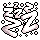 Sleepy Joe – 모든 Idleon 관련 AFK 획득량 +20% |
25 | A | 다양한 게임 활동에 일반적이고 효과적인 부스트입니다. |
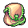 Secret Pouch – 아이템 배낭 인벤토리 슬롯 +3 |
27 | A | 추가 인벤토리 공간으로 스탬프 레벨 올리기에 도움이 됩니다. |
| Magnifying Glass – World 7 연구에 돋보기 +1 추가 | 20 | A | 초반에 쉽게 획득할 수 있는 돋보기 3개가 있으므로 약 25%의 World 7 연구 속도 향상이 됩니다. 단, 나중에 더 많은 돋보기를 잠금 해제함에 따라 효과가 점차 줄어듭니다. |
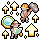 Village Encouragement – World 5 캠프의 모든 주민 EXP 획득량 1.25배 |
30 | B | 계정 전체에 많은 버프를 제공하는 World 5 동굴 메커니즘의 진행을 빠르게 합니다. 해당 항목이 등장하기 전에 이미 상당한 진행을 했다면 중요도가 낮아집니다. |
| More Storage – 창고 슬롯 +12 | 10 | B | 가장 저렴한 창고 확장 옵션. 필요에 따라 구매하세요. |
 Storage Chest – 창고 슬롯 +12 Storage Chest – 창고 슬롯 +12 |
15 | B | 위와 동일합니다. |
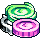 Government Subsidy – 몬스터 처치 시 코인 획득 1.60배 |
17 | B | 더 강력한 코인 배수로, Upgrade Vault와 기타 코인 소비처에 도움이 되는 저렴한 이벤트 상점 구매입니다. |
| Coin Stacking – 모든 코인 획득에 1.50배 배수 적용 | 15 | B | 위와 동일합니다. |
| Golden Tome – World 4의 Tome에 새로운 데미지량 배수 보너스 유형 추가 | 25 | C | 합리적인 데미지량 배수이지만 높은 토메 포인트 레벨에서 스케일링으로 인해 가장 효과적이며, 그 시점에서는 추가 데미지량이 낮은 우선순위입니다. |
 Equinox Enhancement – World 3 Equinox Valley의 바 채우기 속도 1.5배 Equinox Enhancement – World 3 Equinox Valley의 바 채우기 속도 1.5배 |
15 | C | Equinox Valley에는 유용한 부스트가 있지만 이미 다른 속도 증가 소스들이 있어 이벤트 포인트를 쓸 필요가 없습니다. |
| Golden Registrant – 대토너먼트 등록 시 황금 공 1,000개 획득 | 15 | C | 다양한 계정 보너스를 강화하는 아케이드용 황금 공의 소소한 추가 공급원입니다. 황금 공이 많은 계정에서는 낮은 우선순위. |
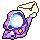 Friendly Slot – Codex의 친구 보너스 슬롯 +1 |
12 | C | 친구 보너스는 계정에 소소한 향상만 제공하며, 기본 슬롯으로도 드랍률 같은 중요한 보너스를 위한 공간이 있습니다. |
| Bonus Points – 후프 및 다트 상점의 포인트 획득 1.5배 | 20 | D | 이 미니게임 포인트 상점들은 주로 스탯에 소소한 향상을 제공하지만 다트에는 나중에 비싼 업그레이드를 밀어붙이는 데 도움이 되는 Vault Upgrade 비용 감소가 있습니다. |
| Gilded Vote Button – 투표 보너스 배수 +17% 증가 | 35 | D | World 2 투표 보너스 중 유용한 것도 있지만, 드물게 돌아오는 것을 고려하면 이 부스트에 대한 비싼 이벤트 상점 구매는 가치가 낮습니다. |
| Sushi Stackz – World 7 스시 스테이션의 재화 획득 2배 | 20 | D | 스시 재화는 진행의 병목이 아니므로 쉽게 건너뛸 수 있습니다. |
| Extra Page – 필터 페이지 +1 | 20 | D | 개인 선호에 따른 편의 구매입니다. |
 Automated Mail – 매일 게임 플레이 시 Post Office 박스 +5 Automated Mail – 매일 게임 플레이 시 Post Office 박스 +5 |
15 | D | 이미 다른 우편함 강화 메커니즘이 있고 은색 펜도 쉽게 파밍할 수 있어 중요한 업그레이드가 아닙니다. |
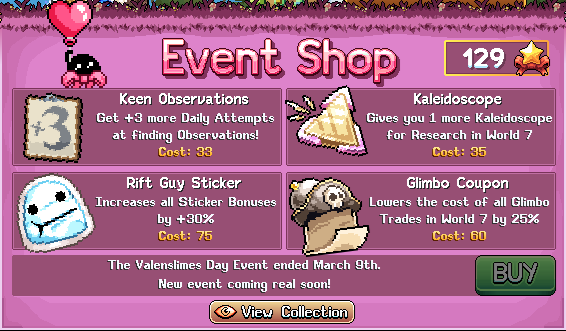
Black Market 티어 리스트
| Event Shop 보너스 | 이벤트 포인트 비용 | 등급 | 비고 |
|---|---|---|---|
| Smiley Statue – 모든 동상 보너스 영구적으로 1.30배 증가 | 70 | S | 동상에는 이 배수가 증가할 강력한 보너스들이 많습니다. |
| Glass Dice – 총 크리스탈 몬스터 스폰 확률 +50% | 35 | S | 크리스탈 몬스터가 많아질수록 동상 파밍이나 캐릭터 레벨 업 등 Active(직접 플레이) 수익이 높아집니다. |
| Extra Exaltedness – 엑솔트 스탬프 사용 +1, 엑솔트 보너스 +20% | 35 | S | 스탬프에는 고유하고 강력한 보너스들이 있으며, 이로써 엑솔트 배수가 증가합니다. |
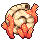 Fossil Meritocracy – World 7의 메리토크라시 보너스 +20% |
45 | S | 마스터클래스 자원, 게이밍 강화, 홀 기념비 같은 중요한 주간에 노력을 극대화할 수 있는 다양한 주목할 만한 보너스가 있습니다. |
| Kaleidoscope – World 7 연구에 만화경 +1 추가 | 35 | S | 관찰의 여러 다른 연구 객체를 배수할 수 있으므로 비교적 저렴하면서도 탄탄한 부스트입니다. |
| King of the Rack – 모자 걸이 보너스 배수 +10% | 30 | S | 모자 수집가에게는 다양한 스탯에 좋은 부스트이지만, 모자 컬렉션이 적다면 낮은 우선순위입니다. |
| Ribbon Connoisseur – 매일 리본 선반을 위한 리본 +3 추가 | 55 | A | World 4에서 추가 리본을 획득하여 최강 게임 내 식사를 강화하는 데 필요한 시간을 단축합니다. |
| Rift Guy Sticker – 모든 스티커 보너스 +30% 증가 | 75 | A | 비트 획득, 클래스 EXP, 탐험 파워 같은 배수에 대한 스티커 컬렉션에 따라 효과가 강해집니다. |
| Glimbo Coupon – World 7의 모든 Glimbo 거래 비용 25% 감소 | 60 | A | 드랍률 배수 보너스를 높이기 위한 추가 구매에 유용한 Glimbo 메커니즘 비용 절감입니다. |
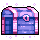 Storage Vault – 창고 슬롯 +16 |
40 | B | 슬롯이 약간 더 많은 더 비싼 창고 확장 옵션. 필요와 선호에 따라 구매하세요. |
| Legend Scroll – World 7 레전드 탤런트 포인트 +2 | 25 | B | 저렴한 Black Market 소스로 일부 World 7 레전드 탤런트 포인트 추가. 계정 레벨이 낮을수록 가치가 더 높습니다. |
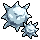 Minehead Money – World 7 Depth Charge 재화 획득 2배 |
35 | B | 이미 Minehead의 다양한 재화 획득 소스들이 있어 필수는 아니지만, 이 메커니즘의 다양한 보너스 잠금 해제에 걸리는 시간을 줄여줍니다. |
| Royal Vote Button – 투표 보너스 배수 +17% 대신 +30% 획득 | 25 | C | World 2 투표 보너스 중 유용한 것도 있으며 추가 부스트로 더욱 향상됩니다. |
| Supreme Wiring – 매일 프린터 출력 +2%, 새 샘플 채취 시 초기화 | 45 | D | 월드 곳곳에 이미 많은 프린터 출력 부스트가 흩어져 있어 이 추가 소스는 필요하지 않습니다. |
| Summoning Star – 소환 업그레이드에 사용되는 소환 더블러 +10 | 30 | D | 이미 에센스 및 데미지 설정을 소환 별로 전환하고 있어 추가 별이 특별히 유용하지 않습니다. |
| Plain Showcase – World 7 갤러리 트로피 슬롯 +1 | 35 | D | 현재 이 업그레이드를 유용하게 쓸 만큼 강력한 트로피가 충분하지 않습니다. |
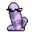 Coolral – W7 Coral Reef의 일일 획득량 1.30배 증가 |
30 | D | 이미 다른 산호 부스트 소스들이 많고, 모든 업그레이드를 최대화한 이후에는 산호의 용도가 없으므로 필수가 아닙니다. |
| Keen Observations – 매일 관찰 발견 시도 +3 | 33 | D | World 7에서 새로운 관찰을 잠금 해제하는 RNG의 고통을 극복하기 좋지만 결국 모두 잠금 해제하므로 낮은 우선순위입니다. |
| Another Page – 필터 페이지 +1 | 50 | D | 개인 선호에 따른 편의 구매입니다. |
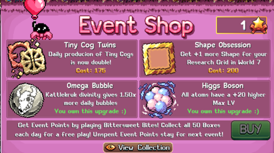
Forbidden Aisle 티어 리스트
| Event Shop 보너스 | 이벤트 포인트 비용 | 등급 | 비고 |
|---|---|---|---|
| Singed Tome – World 4 Tome에 새로운 드랍률 배수 보너스 유형 추가 | 125 | S | 많은 게임 활동에 효과적인 핵심 드랍률 스탯을 크게 높입니다. 토메 점수에 따라 약 1.25배 배수입니다. |
| Higgs Boson – 모든 원자의 최대 레벨 +20 | 150 | S | 원자에는 이 Forbidden Aisle 구매로 더 높이 올릴 수 있는 희귀한 계정 부스트가 있습니다. 엑솔트 스탬프 파워를 위한 알루미늄, 요리 속도를 위한 불소, 추가 건설 속도를 위한 질소 등이 포함됩니다. |
| Worldclass Showcase – World 7의 갤러리 슬롯을 4등급으로 전환 | 180 | A | 트로피 컬렉션에 따라 드랍률 및/또는 AFK 부스트를 위해 가장 강력한 트로피의 보너스를 높입니다. |
| Research Registrant – 토너먼트 등록 시 12시간 연구 획득 제공 | 150 | A | 매일 24시간 대신 36시간을 제공하여 잠재적으로 연구 EXP를 최대 1.5배 높이며, 연구 관련 메커니즘(Minehead, 스시)도 함께 진행됩니다. Idleon을 정기적으로 열지 않는 플레이어에게 특히 강력합니다. AFK 획득이 아닌 12시간의 Active 획득률을 제공합니다. |
| Shape Obsession – World 7 연구 그리드에 도형 +1 추가 | 200 | B | 도형은 특정 순서로 잠금 해제되므로 정확한 도형은 연구 진행도와 도형 소스에 따라 다릅니다. 연구가 자리를 잡은 후 강력한 연구 그리드 보너스를 배수하는 데 유용합니다. |
| Magnate Exotica – 주간 이국 시장 구매 +8, +30%는 무료 | 170 | B | 이국 시장 구매의 감소 수익 구간에 더 빨리 도달하고, 이국 시장에 특정 희귀 항목이 등장할 때 활용을 극대화합니다. |
| Glimbo VIP Pass – 각 Glimbo 거래마다 Vault 최대 레벨 +1 대신 +2 증가 | 199 | B | Glimbo의 신성력 같은 일부 볼트 업그레이드는 합리적으로 유용하지만, 거래 가능 횟수와 비용에 여전히 제한이 있어 실제로는 큰 부스트가 아닙니다. |
| Tiny Cogs – 작은 톱니바퀴의 일일 생산량 2배 | 175 | C | 작은 톱니바퀴는 매우 강력하지만 건설 보드에 배치할 수 있는 공간이 제한적이므로 이 구매는 이상적인 톱니바퀴 컬렉션을 완성하는 데 걸리는 시간만 단축합니다. 건설 보드가 약한 경우 더 강력합니다. |
| Monumental Reverence – 모든 기념비 보너스에 매일 영구적으로 레벨 +100 | 100 | C | 이 효과의 강도는 기념비 진행도에 따라 다르며, 100 레벨이 큰 영향을 미치는 초반에는 매우 강력할 수 있습니다. 단, 최소 1레벨 이상인 보너스만 강화됩니다. 확립된 기념비 플레이어에게는 대부분 기념비 보너스의 감소 수익 때문에 100 레벨이 효과가 없을 수 있으므로 본인 계정 상황을 고려하세요. |
| Omega Bubble – Kattlekruk 신성이 매일 버블을 1.50배 더 제공 | 75 | C | 이 구매의 효과는 연금술 진행도와 Kruker Stamp의 일일 스탬프 적중 행운에 따라 달라집니다. 연금술 진행 가속은 유용하지만 Kruk에서 가장 영향력 있는 버블(스탯 버블)은 버블 레벨 50,000 이후 효과가 감소합니다. |